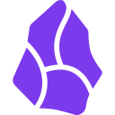

Components付费版
一个可以改变 Obsidian 玩法的插件
可视化的设计、组织和管理你的知识系统 🚀
来了解一下。
想象不再受限 🎉
10 余种组件，
像玩乐高一样搭建和管理你的系统
数据视图
以表格、画廊、列表、看板或日历的形式管理笔记
统计数字
根据指定的规则统计笔记、任务的数量
卡片
多功能卡片组件，可以用来展示图片、文字，也可以作为一个按钮
Markdown
可以嵌入任意的 markdown 文本内容并进行渲染，支持与其他以代码块作为基础进行渲染的插件联动
组合
提供了多种布局模式在页面中组合组件，包括标签页布局、分栏布局、列表布局...
正计时
当前时间距离过去某个时间过去了多久
日期进度
实时显示距离某个截止日期的进度
按钮
设置点击执行命令、创建文件、打开链接等
打卡
通过打卡记录自己的长期习惯
倒计时
当前时间距离未来某个时间还有多久
时钟
一个极简的实时时钟组件
图表
统计文档数据并生成多样化的图表，支持折线图、柱状图、饼图等
附件库
管理全库的附件，包括图片、PDF等
两种买断制授权，灵活选择
大版本授权
28 元
大版本授权用户可获得购买时所属大版本的永久使用权，跨大版本升级需要重新购买使用权。点击查看详细说明 →
永久授权
88 元
永久授权不受版本更新限制